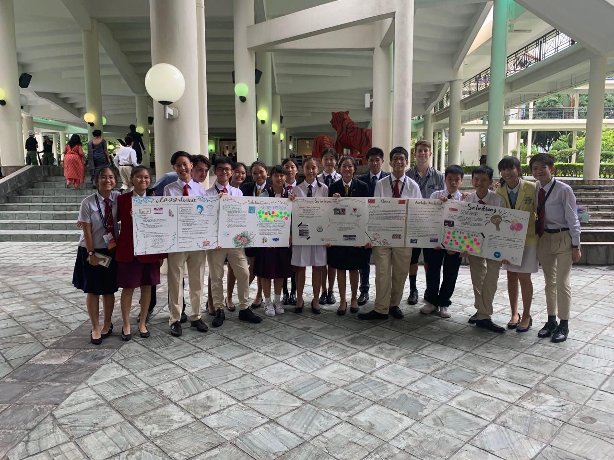

Youth Faculty 3: Class Divide
Under Youth Assembly 1: Social Integration
Class divide refers to the prejudice against a group of people due to the difference in socioeconomic status. The ever-increasing income gap engenders a class system where the wealthier are considered more elite while the lower of the social hierarchy are discriminated against, hence perpetuating a vicious cycle which exacerbates the question at hand. However, Education holds the power to lessen the gap between the rich and the poor.
Education is one cause of class divide.
This is due to the existence of Elite and Non-elite schools as well as their associated stereotypes. Such stereotypes include smarter or more athletic students being housed in elite schools while students of lower intellect and capability being taught in non-elite schools. In such cases, students in non-elite schools are automatically looked down upon and deemed to be of lower value than that of students from elite schools.
Streaming in Singapore's education system which sorts students based on their academic ability also perpetuates class divide. Streaming results in a vicious cycle of the rich consistently climbing to the top of the social ladder while the less well-off may automatically drop to the bottom of it. This is because the rich have the means to afford classes such as tuition which may significantly aid a child's academic progression. However, such advantages are not available for students at the lower classes as it may not be within one's financial means to send their children for tuition, resulting in them losing from the starting line.
One other cause of class divide may be the lack of interaction between classes.
This lack of interaction leads to a lack of awareness and understanding between different classes which increases the likelihood of discrimination between classes due to misunderstandings and stereotypes of certain classes.
An impact of class divide is an unhealthy social environment.
A society's environment is highly dependent on its people. Therefore, class divide may negatively impact one's social environment. Social stigma in a society for example, is caused by the lack of interaction between people of different social classes. Pre-conceived notions may be formed and people may view other social classes negatively due to their initial impressions which are often biased and false. Therefore, different classes within a society may be viewed with stigma and treated unfairly or with discrimination.
After synthesising the problems of class divide as well as its impacts, we have come up with several solutions to combat this issue.
Firstly, we could ensure that there is inclusive housing which increases the interactions between people of different social classes. This could be done through ensuring every HDB estate has a balanced mix of public-private developments. HDB flats also have to cater to diverse needs.
For example, the installation of common spaces ensures residents of different backgrounds can socialise and amenities like shops, hawker centres and playgrounds where people can get together no matter who they are or which class they are from. Living in close proximity increases opportunities for meaningful interactions that encourage mutual understanding.
Therefore, countries should make a concerted effort to mix households of different social classes within the same estate to promote inter-class interaction. This will possibly reduce the prejudice against the lower classes
Secondly, we should also take advantage of educational programmes for interaction between students of different social classes
For example, using Outward Bound Singapore, which is an outdoor adventure programme compulsory for every Secondary 3 student to attend, it would allow
students from various financial backgrounds to be brought together to engage in meaningful interactions through the outdoor programme they would be put through.
Thirdly, In the classroom, we can replace streaming with Subject Based Banding.
Streaming in the past, placed students into different streams, namely IP/IB, Express, Normal (Academic) and Normal (Technical) However, now with this scheme being scrapped and replaced with subject-based banding. Students can opt to take more advanced or more basic syllabi based on their results. Therefore, students’ formclasses would have a fair mix of students from different financial backgrounds, allowing those from different social backgrounds to socialise.
Lastly, we can raise awareness about the fair treatment of people from all social classes. By making people aware of the inconsistencies in their own beliefs, we can quash inaccurate notions and prevent pre-conceived notions.
Through efforts such as peer tutoring, it allows for students to understand each other better and reduce the misconception, and develop empathy for each other
The Lens
Here is our lens video, through comedy, it covers the following issue depicted in Singapore, but also applicable to other countries who practice streaming such as Germany, and is focusing on the topic of class divide, especially between streams. We hope you would enjoy it :)
Exhibition
Our exhibition focuses on the causes, impacts, and solutions of class divide. Since class divide, is not unique to Singapore, we have included case studies on several other countries such as that of China, New Zealand, and Australia.
(here we would include your exhibition boards, hopefully you left it in ops room)
Thank You 25th ! ！
thank you slc for making those 3 days fun and enjoyable, yet enriching and educational. we have bonded with our group and are really thankful for all the friendships we've forged. we really enjoyed our time at slc and are grateful for the ot and facils for being so dedicated, they were amazing ❤
- venus and lois
thank you slc for giving us this chance to be a part of this legacy, thank you for enabling us to meet different people, and have enriching new experiences. the bonds forged, and memories formed here would last a lifetime. SLC has been the time of our lives, thank you so much :)
- dylan and wenxin"